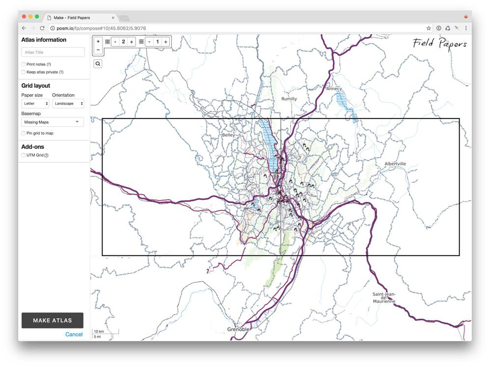

Mapping¶
Todo
This section is being edited and updated. Please let us know if you find any errors or omissions.
This section walks through the different POSM features: Editing OSM, Field Papers, OpenDataKit and OpenMapKit (including setting up mobile data collection on Android phones, OpenDroneMap, key downloads, and the admin interface.
Planning mapping¶
Aside from the technology itself, there are a number of things that need to be considered for mapping work: the size of the area, number of enumerators needed and time required, the data required and the data model for collecting it, etc. There’s also a lot of nuance in teaching people (especially in other languages/cultures) how to use different mapping tools. There are a variety of resources (including presentation and training materials) on the Missing Maps website which may be useful. You can also reach out in advance and, if we have time, we may be able to talk through your project and provide suggestions from past experiences.
Collecting OSM data¶
Paper-based mapping (Field Papers)¶
Field Papers creates a grid of atlas pages for an area which you can print off and use to walk around the target area and annotate the paper map with missing buildings, address points, and any other relevant features. Afterwards, you take a photo or scan each page and Field Papers will use the QR code on each atlas page to georeference the area - it will appear as a semi-transparent layer in iD editor or JOSM and you will need to digitally trace your edits into the existing OSM data. The process is largely self-explanatory and documented in the actual Field Papers app.
Creating an atlas (we usually size these so that a single page is no larger than a few city blocks):
Example of atlas page (we print these in black and white to save money/ink):
Field Papers being used to record addresses in Dhaka, Bangladesh:
Field Papers has some advantages. It’s great in areas where there may be missing features (like buildings) that need to be added into OSM, or where you want maximum flexibility for what information you want to collect. We also use Field papers mapping in areas where security is a big concern and using smartphones would make volunteers targets for theft. The main disadvantage of Field Papers is that the data entry afterwards can be time-consuming, we often notice spelling mistakes or other inconsistencies afterwards that require more time to clean, and it can sometimes be difficult to enumerators to orient themselves into the space on the map. For this reason, we prefer using digital tools like OpenMapKit.
Mobile data collection¶
There’s a variety of different apps and tools to support mobile data collection and mapping. We prefer OpenDataKit (ODK) and OpenMapKit (OMK). We often find ourselves doing work where we have to collect the same pieces of information for all the buildings, schools, etc in an area, and OMK is designed to make this process fast and easy.
Setting up the phones¶
In terms of hardware, we use Blu Advance 5.0 phones. We’ve tried a lot of different phones, and the Blu’s are our favorite so far - cheap, hardy, easy to use, and they have a reliable GPS signal.
Regardless of what type of phone you’re using, you will need to download the ODK and OMK apps. These are available through the posm.io homepage - simply connect your phone to the POSM wifi to access them.
POSM can be used to share the install files for several other apps that can help with mapping:
- OsmAnd . This app provides offline maps and is extremely useful for wayfinding and orientation. We also use this for planning travel and recording volunteers’ tracks during mapping work.
- OpenSignal . This runs in the background to record cell phone signal strength when the home screen is in use. You can download the data from the phones to see how the signal varied in your mapping area, and the data goes into OpenSignal’s crowdsourcing database.
- AppLock . If you’re providing the phones and/or SIM cards for mapping, then you may want to be able to control which apps can be used by enumerators and which cannot.
Setting up a form for OpenDataKit or OpenMapKit¶
Before you can use OpenDataKit/OpenMapKit, you need a survey form. There’s some documentation on the OpenDataKit website, but here’s a working example as well:
This is a basic buildings form that we use. It contains three tabs: “survey”, “osm”, and “settings” (which you can ignore).
The “survey” tab contains a series of ODK question types, most of which are recorded in the background (e.g. start time, end time, date of survey, device ID, etc.). The “osm building tags” question tells ODK to launch the OpenMapKit app and to move to the “osm” tab in the workbook and look for the “building_tags” question.
First, make any additions to the question types you need and what you want to call them. Then, move to the “osm” tab. Here’s how it works:
What this looks like: an enumerator will open ODK to conduct a survey. After recording all the background information (start time, etc), ODK will hit the “osm” question type and prompt the user to launch OpenMapKit. At this point, the user will see a map interface with his/her GPS location and the OSM buildings/features surrounding him/her. When the user taps on a building, they will see all the OSM tags that currently exist for that building. They will then swipe through the survey, which contains one screen for each of the fields in the orange box (building, name, etc). Each of those fields will have pre-populated choices from the purple box. These correspond to OSM key:value pairs, but may be labeled differently in order to make sense to the user.
If you need help deciding what key:value pairs you need to record (and how to classify things appropriately based on context), the OSM wiki and TagInfo are both great resources. We are currently adding these into the POSM core tools to make them available offline.
Once you’ve set up your ODK/OMK form, save it as a .xls or .xlsx (Excel) workbook. Access the posm.io homepage, navigate to OpenMapKit (where you’ll see the existing forms and can access their submissions and the XLSX form that was used to create them). Click the three dots at the top-right of the screen and select “Upload form”.
You can then drag and drop your ODK Excel form to upload it. When it’s done, you’ll see it added to the grid of forms in the main OpenMapKit Server menu.
Using ODK/OMK on the phones¶
The first time you use a phone for a mobile data collection project, you have to get the survey deployment set up - this means map tiles, OSM data, and the ODK/OMK form itself.
This speakerdeck walks through configuration of ODK and OMK.
Manually pushing data from phones to POSM¶
If the completed forms are not set to automatically send to POSM, then you can push them manually. In the home screen for ODK, press the “Send finalized forms” button. There will be a number in parentheses which indicates how many unsent forms are on the device:
Tying it all together¶
Once you’ve walked through this workflow on the phones to set them up, then they are tested and ready for use. You will need to complete and save an ODK/OMK form for every OSM feature that you survey, and can push these to the POSM during/after mapping work.
Encrypting sensitive data¶
As part of our commitment to responsible data management, the American Red Cross uses encryption when collecting sensitive information using mobile data collection. We do this using ODK Briefcase. The online instructions are a little tricky to follow, so here’s a guide to setting this up.
Setup for MacOS¶
- Download ODK Briefcase . The application is a
.jarfile. Put this somewhere handy. - Download dependencies. There are instructions for this on the ODK encrypted forms page . Under Configuration, look for the Java Cryptography Extension package (currently available here ). Download this package.
(JCE package to download)
- Unzip the JCE package that you just downloaded. Open the folder it creates. You should see three files, shown in the screenshot below. Copy these files. You will need to paste them to another location.
(Copy these files to paste elsewhere)
- Navigate to your internet plug-ins. On a Mac, this will generally be
Macintosh HD/Library/Internet Plug-ins/. You should see a file calledJavaAppletPlugin.plugin. Right-click this file and selectShow package contents. In the new directory that appears, navigate toContents/home/lib/security. Paste the JCE files (that you copied in Step 3) into this directory.
(Paste the JCE files here)
Creating key pair and encrypted XLSForm¶
Now that you’ve got the right configuration, you can start to use ODK Briefcase.
Creating an encrypted form is just like creating a regular ODK form, except that you will add a public key into the settings tab in the XLS form. ODK will build the form with this public key and later on, you’ll use your corresponding private key to decrypt the data.
To create a public and private key pair:
- Open Terminal and navigate to the folder where you want the keys to live. I put these in the same directory as where my survey form and results will go.
- Create a private key using the command
openssl genrsa -out NameOfKey_private.pem 2048 - Use the private key you just created in order to create a public key. Use the command
openssl genrsa -in NameOfKey_private.pem -inform PEM -out NameOfKey_public.pem -outform PEM -pubout - Navigate to the public key you just created. Open it in a text editor and copy the text.
- In your XLS form, go to the
Settingstab. If you don’t already have a Settings tab, then create one. You need to have a column titledpublic_key. Paste the text from your public key file into this column. You can then use the XLS form to create your ODK survey and load it onto mobile devices.
(Add public key to XLS form)
Decrypting data¶
We upload data from mobile devices onto omkserver running on POSM servers.
On omkserver, encrypted data will be a random string of text. You have to download and decrypt the submissions in order to be able to use them. “Downloading” the data works in two steps: first ODK Briefcase fetches (“pulls”) all the encrypted submissions and attachments. Then ODK Briefcase decrypts (“exports”) them.
- Open ODK Briefcase (the .jar file)
- Under the “Pull” tab, select the type of server (ODK Aggregate 1.0) and the server url (http://posm.io). Connect to this server and select the forms to fetch.
- Under the “Export” tab, select the form, the export type, the export directory, and the PEM private key file to use for decryption. This will give you a directory with results and attachments.